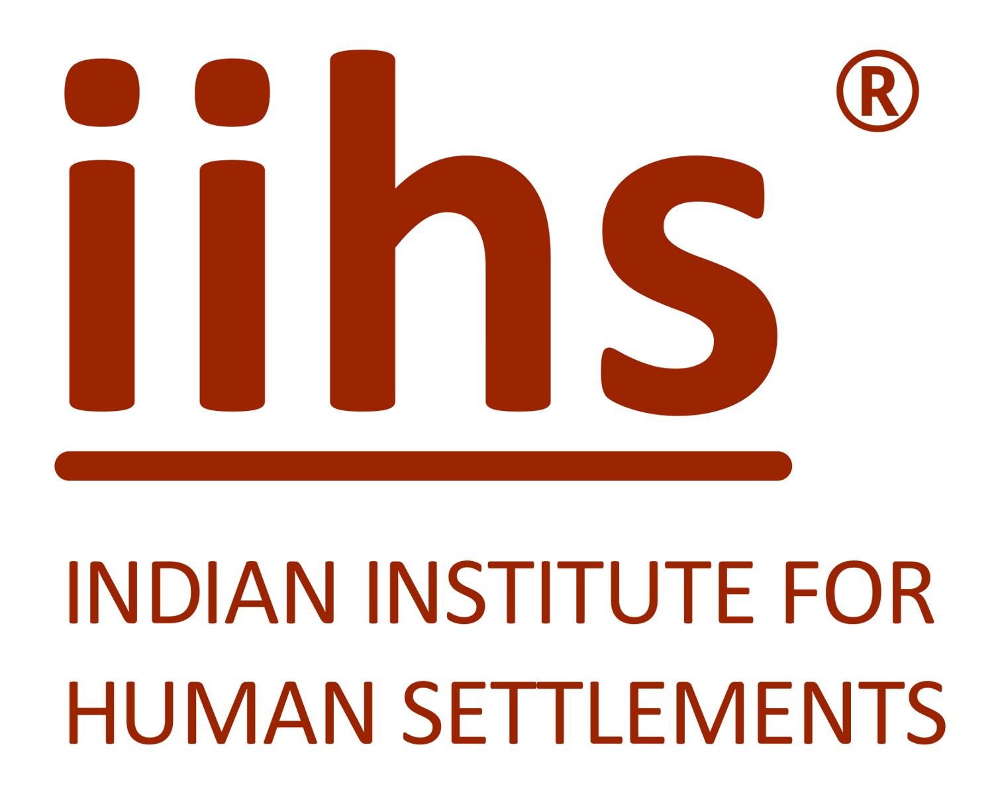

Lead - Urban Practice and Policy
Anchor multi-stakeholder urban practice projects and policy-facing outputs.
Closes 28 JunApply Now

Careers at IIHSDesign Set 2 · Editorial sequential flowEmail + OTP verifiedAnchor multi-stakeholder urban practice projects and policy-facing outputs.
Hybrid · 3-5 yrs · closes 05 Jul
Bengaluru · 6-8 yrs · closes 11 Jul
The page now moves like a guided editorial application journey: select the main JD, add two alternates, number the preference order, then upload the resume.
Apply Now marks the clicked JD as preference 1 immediately.
Apply NowAnchor multi-stakeholder urban practice projects and policy-facing outputs.
Support applied research, writing, and stakeholder coordination.
Coordinate programme operations, schedules, and documentation.
This section separates JD detail from the selected-role tray so the candidate understands what just happened.
3/3 selectedNumbered controls are explicit: every selected JD has one rank, and there are no hidden states.
Confirm preferencesPrimary role chosen from Apply Now.
Keep firstSecond preference.
Move upThird preference.
Move upPreferences cannot be edited after final declaration.
PDF/DOC/DOCX accepted. Maximum file size is 5MB.
Draft autosavedThe rest of the form remains standard across all three roles.
ContinueConfirm parsed details.
Contact and identity.
Qualifications.
Roles and projects.
Cover letter, references.
Review and submit.